《睡魔》合订本整理与购买指南
尼尔·盖曼于1989-1996年连载的《睡魔》图像小说是DC/VERTIGO公司有史以来最畅销最受欢迎的漫画之一，仅仅是75期正传和三四部短篇的前传外传番外，这本在漫画领域并不怎么算长的长篇连载系列已经在过去三十多年来经历了无数次的再版与再版和重新集合再再版。本篇文章（睡魔bot著）将详细介绍这些年来出过的那些让人眼花缭乱找不着谁是谁哪是哪的合订本，并为新老读者提供优缺点讲解，和我的个人推荐购买/收集方向。
在正式开始前，我们先来集合一下所谓的“尼尔·盖曼《睡魔》本体”都包含了哪些作品，具体英文名字可查阅本博置顶博文：
1989-1996年《睡魔》75期
1991年《睡魔：俄耳甫斯之歌》特期
1992年《畏惧坠落》短篇
1993年《死亡：活着的高昂代价》3期
1993年《城堡》短篇
1994年《睡魔：午夜剧场》特期
1994年《死亡浅谈生命》短篇
1996年《死亡：若生一刻》3期
1998年《浪漫之花》短篇
1999年《冬日谈》短篇
1999年《睡魔：捕梦者》插画小说
2000年《他们是如何遇见他们自己的》短篇
2002年《摩天轮》短篇
2003年《睡魔：无尽黑夜》特期
2009年《睡魔：捕梦者》小说改4期漫画
2013-2015年《睡魔：序曲》6期
漫画合订本分为两种装订方式，“精装本/Hardcover/HC”与“平装本/Softcover/Paperback/TPB”。两者最显著的区别在于价格。精装本不仅封面皮是硬的还有一层额外的外包书皮，其更是拥有较好的装订方式和书脊，可以随意平摊开页面而不用担心脱胶等问题，相应的精装本价格要更贵；平装本跟我们平时所阅读的小说是一样的，只有一层薄薄的脆皮封面保护，也更不容易平摊开页面，阅读时还要小心不会损坏书脊和固定胶。精装本更适合收藏，易保存不易掉页，而相反平装本更适合首次阅读，拿在手里更有书籍的感觉。
了解完基本的信息↑之后，我们进入正题，《睡魔》的合订本：
————分界线————
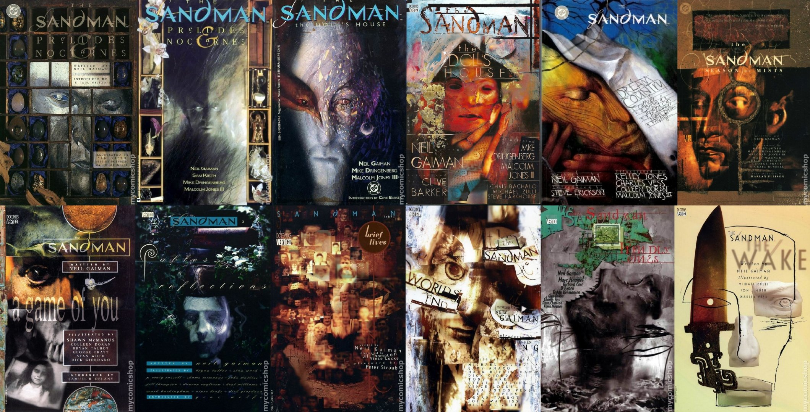
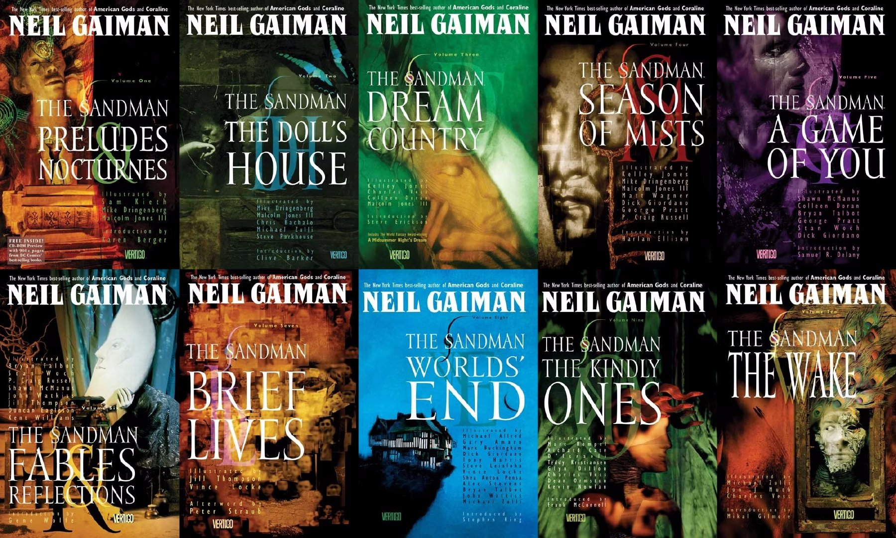
出版时间：1990-1997年，2003年
出版情况：已停止印刷
出版社：美版初刷DC，美版再刷DCVERTIGO，2003美版VERTIGO，英版TITANS
装订方式：平装/Softcover/Paperback/TPB
总共本数：十本 + 特别封面版一本 + 合集更正版一本 + 2003新封面十本
包含形式：按故事线集合
包含内容：《睡魔》正传 +《睡魔：俄耳甫斯之歌》特期 +《畏惧坠落》短篇 +《城堡》短篇
优点：封面好看，作为第一版合订本收藏价值超高，炫耀指数十颗星。
缺点：平装装订，很难买到，未经过重新上色，状态老旧，包含内容不全。
推荐指数：3/5
《睡魔》卷一前奏与夜曲/The Sandman Vol. 1 Preludes & Nocturnes
包含：《睡魔》1-8
页数：240页
出版时间：1991年11月
封面标价：19.95美元
《睡魔》华纳特别版/The Sandman Warner Edition
包含：《睡魔》1-8
页数：240页
出版时间：1991年9月
封面标价：19.95美元
注意：此本跟卷一没有区别，只是封面换了。
《睡魔》卷二玩偶之家/The Sandman Vol. 2 The Doll's House
包含：《睡魔》8-16
页数：256页
出版时间：1990年7月
封面标价：19.95美元
注意：卷二是《睡魔》系列正式的第一本合订本，正是它的销售成功让《睡魔》决定进行全系列的合订发行，也正因如此该合订本包含了话8，在后续的印刷中话8则被分给了卷一，卷二不再包含。
《睡魔》卷二玩偶之家/The Sandman Vol. 2 The Doll's House（更正版本）
包含：《睡魔》9-16
页数：240页
出版时间：未知
封面标价：19.95美元
注意：从此次印刷开始，卷二不再包含话8。
《睡魔》卷三梦境国度/The Sandman Vol. 3 Dream Country
包含：《睡魔》17-20
页数：160页
出版时间：1991年9月
封面标价：14.95美元
《睡魔》卷四迷雾季节/The Sandman Vol. 4 Season of Mists
包含：《睡魔》21-28
页数：224页
出版时间：1992年5月
封面标价：19.95美元
《睡魔》卷五一场游戏一场梦/The Sandman Vol. 5 A Game of You
包含：《睡魔》32-37
页数：192页
出版时间：1993年9月
封面标价：19.95美元
注意：从该卷开始，本系列的合订本美版印刷全部由DC标志改为DCVERTIGO标志。
《睡魔》卷六神话与倒影/The Sandman Vol. 6 Fables and Reflections
包含：《睡魔》29-31/38-40/50 +《睡魔：俄耳甫斯之歌》特期 +《畏惧坠落》短篇
页数：264页
出版时间：1994年1月
封面标价：19.95美元
《睡魔》卷七短暂生命/The Sandman Vol. 7 Brief Lives
包含：《睡魔》41-49
页数：256页
出版时间：1994年12月
封面标价：19.95美元
《睡魔》卷八世界尽头/The Sandman Vol. 8 World's End
包含：《睡魔》51-56
页数：168页
出版时间：1995年7月
封面标价：19.95美元
《睡魔》卷九仁慈女神/The Sandman Vol. 9 The Kindly Ones
包含：《睡魔》57-69 +《城堡》短篇
页数：352页
出版时间：1996年9月
封面标价：19.95美元
《睡魔》卷十梦醒时分/The Sandman Vol. 10 The Wake
包含：《睡魔》70-75
页数：192页
出版时间：1997年7月
封面标价：19.95美元
————分界线————
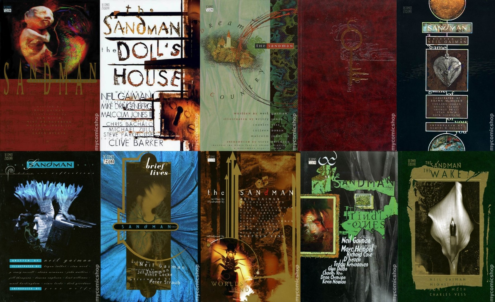
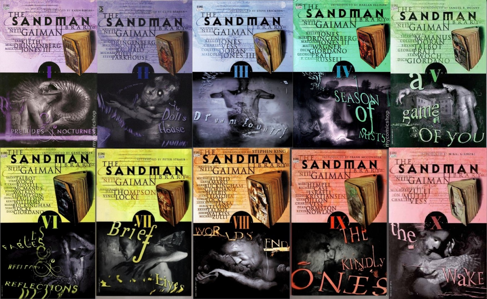
出版时间：1992-1999年，2003年
出版情况：已停止印刷
出版社：美版初刷DC，美版再刷DCVERTIGO，2003美版VERTIGO，英版TITANS
装订方式：精装/Hardcover/HC
总共本数：十本 + 2003新封面十本
包含形式：按故事线集合
包含内容：《睡魔》正传 +《睡魔：俄耳甫斯之歌》特期 +《畏惧坠落》短篇 +《城堡》短篇
优点：复古封面别具风味，收藏价值高，保存状态不错。
缺点：很难买到，未经过重新上色，包含内容不全，价格昂贵。
推荐指数：2/5
《睡魔》卷一前奏与夜曲/The Sandman Vol. 1 Preludes & Nocturnes
包含：《睡魔》1-8
页数：240页
封面标价：29.95美元
《睡魔》卷二玩偶之家/The Sandman Vol. 2 The Doll's House
包含：《睡魔》8-16
页数：232页
封面标价：29.95美元
《睡魔》卷三梦境国度/The Sandman Vol. 3 Dream Country
包含：《睡魔》17-20
页数：160页
封面标价：29.95美元
《睡魔》卷四迷雾季节/The Sandman Vol. 4 Season of Mists
包含：《睡魔》21-28
页数：224页
封面标价：29.95美元
《睡魔》卷五一场游戏一场梦/The Sandman Vol. 5 A Game of You
包含：《睡魔》32-37
页数：192页
封面标价：29.95美元
《睡魔》卷六神话与倒影/The Sandman Vol. 6 Fables and Reflections
包含：《睡魔》29-31/38-40/50 +《睡魔：俄耳甫斯之歌》特期 +《畏惧坠落》短篇
页数：264页
封面标价：29.95美元
《睡魔》卷七短暂生命/The Sandman Vol. 7 Brief Lives
包含：《睡魔》41-49
页数：256页
封面标价：29.95美元
《睡魔》卷八世界尽头/The Sandman Vol. 8 World's End
包含：《睡魔》51-56
页数：168页
封面标价：29.95美元
《睡魔》卷九仁慈女神/The Sandman Vol. 9 The Kindly Ones
包含：《睡魔》57-69 +《城堡》短篇
页数：352页
封面标价：34.95美元
《睡魔》卷十梦醒时分/The Sandman Vol. 10 The Wake
包含：《睡魔》70-75
页数：192页
封面标价：29.95美元
————分界线————
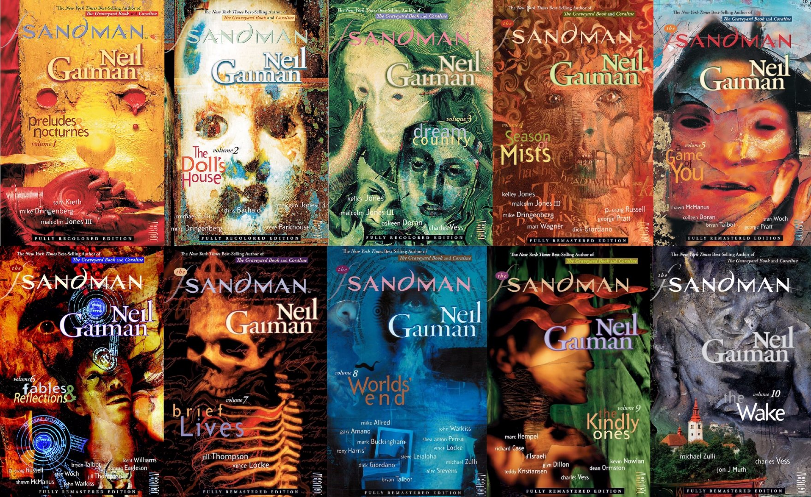
出版时间：2010-2012年
出版情况：已停止印刷
出版社：VERTIGO
装订方式：平装/Softcover/Paperback/TPB
总共本数：十本
包含形式：按故事线集合
包含内容：《睡魔》正传 +《睡魔：俄耳甫斯之歌》特期 +《畏惧坠落》短篇 +《城堡》短篇
优点：部分封面个性十足
缺点：平装装订，部分封面个性十足，内容不全
推荐指数：1/5
注意：以下信息取自DC官网，页数与包含内容可能有误差。
《睡魔》卷一前奏与夜曲/The Sandman Vol. 1 Preludes & Nocturnes
包含：《睡魔》1-8
页数：240页
出版时间：2010年10月
封面标价：19.99美元
《睡魔》卷二玩偶之家/The Sandman Vol. 2 The Doll's House
包含：《睡魔》9-16
页数：232页
出版时间：2010年10月
封面标价：19.99美元
《睡魔》卷三梦境国度/The Sandman Vol. 3 Dream Country
包含：《睡魔》17-20
页数：160页
出版时间：2010年10月
封面标价：19.99美元
《睡魔》卷四迷雾季节/The Sandman Vol. 4 Season of Mists
包含：《睡魔》21-28
页数：192页
出版时间：2011年1月
封面标价：19.99美元
《睡魔》卷五一场游戏一场梦/The Sandman Vol. 5 A Game of You
包含：《睡魔》32-37
页数：192页
出版时间：2011年4月
封面标价：19.99美元
《睡魔》卷六神话与倒影/The Sandman Vol. 6 Fables and Reflections
包含：《睡魔》29-31/38-40/50 +《睡魔：俄耳甫斯之歌》特期 +《畏惧坠落》短篇
页数：262页
出版时间：2011年8月
封面标价：19.99美元
《睡魔》卷七短暂生命/The Sandman Vol. 7 Brief Lives
包含：《睡魔》41-49
页数：168页（可能有误）
出版时间：2011年12月
封面标价：19.99美元
《睡魔》卷八世界尽头/The Sandman Vol. 8 World's End
包含：《睡魔》51-56
页数：168页
出版时间：2012年2月
封面标价：19.99美元
《睡魔》卷九仁慈女神/The Sandman Vol. 9 The Kindly Ones
包含：《睡魔》57-69 +《城堡》短篇
页数：320页
出版时间：2012年5月
封面标价：19.99美元
《睡魔》卷十梦醒时分/The Sandman Vol. 10 The Wake
包含：《睡魔》70-75
页数：192页
出版时间：2012年11月
封面标价：19.99美元
————分界线————
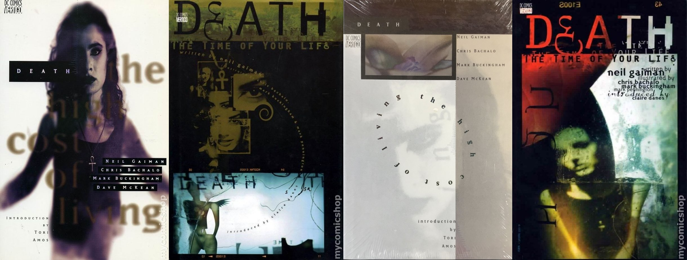
出版时间：1994年，1997年
出版情况：已停止印刷
出版社：DC VERTIGO
装订方式：平装/Softcover/Paperback/TPB，精装/Hardcover/HC
总共本数：两本平装 + 两本精装
包含形式：按刊物集合
包含内容：《死亡：活着的高昂代价》3期 +《死亡：一生若刻》3期
优点：封面美丽，收藏价值巨高
缺点：很难买到
推荐指数：3/5
《死亡：活着的高昂代价》/Death: The High Cost of Living
装订方式：平装/Softcover/Paperback/TPB
包含：《死亡：活着的高昂代价》1-3
页数：104页
出版时间：1994年4月
封面标价：12.95美元
《死亡：一生若刻》/Death: The Time of Your Life
装订方式：平装/Softcover/Paperback/TPB
包含：《死亡：一生若刻》1-3
页数：96页
出版时间：1997年10月
封面标价：12.95美元
《死亡：活着的高昂代价》/Death: The High Cost of Living
装订方式：精装/Hardcover/HC
包含：《死亡：活着的高昂代价》1-3
页数：104页
出版时间：1994年4月
封面标价：19.95美元
《死亡：一生若刻》/Death: The Time of Your Life
装订方式：精装/Hardcover/HC
包含：《死亡：一生若刻》1-3
页数：96页
出版时间：1997年10月
封面标价：19.95美元
————分界线————
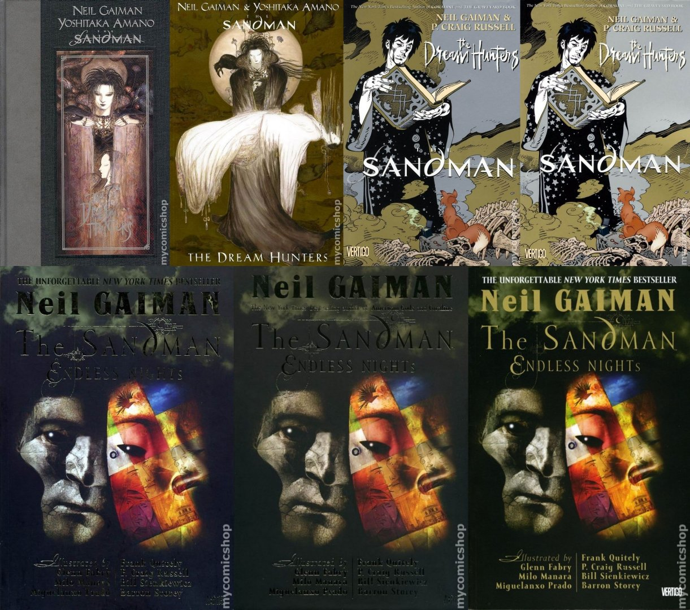
出版时间：1999年，2000年，2003年，2009年，2010年，2013年
出版情况：已停止印刷
出版社：VERTIGO
装订方式：平装/Softcover/Paperback/TPB，精装/Hardcover/HC
总共本数：四本平装，三本精装
包含形式：按刊物集合
包含内容：《睡魔：捕梦者》插画小说 + 《睡魔：无尽黑夜》特期 +《睡魔：捕梦者》小说改漫画
优点：封面别具风味，收藏价值巨高
缺点：很难买到，价格昂贵
推荐指数：2.5/5
《睡魔：捕梦者》/The Sandman: The Dream Hunters（精装本）
包含：《睡魔：捕梦者》插画小说
页数：136页
出版时间：1999年10月
封面标价：29.99美元
《睡魔：捕梦者》/The Sandman: The Dream Hunters（平装本）
包含：《睡魔：捕梦者》插画小说
页数：136页
出版时间：2000年8月
封面标价：19.95美元
《睡魔：捕梦者》/The Sandman: The Dream Hunters（平装本）
包含：《睡魔：捕梦者》小说改漫画
页数：144页
出版时间：2009年10月
封面标价：19.99美元
《睡魔：捕梦者》/The Sandman: The Dream Hunters（精装本）
包含：《睡魔：捕梦者》小说改漫画
页数：144页
出版时间：2010年10月
封面标价：24.99美元
《睡魔：无尽黑夜》/The Sandman: Endless Nights（平装本）
页数：160页
出版时间：2003年9月
封面标价：17.95美元
《睡魔：无尽黑夜》/The Sandman: Endless Nights（精装本）
页数：160页
出版时间：2003年9月
封面标价：24.95美元
《睡魔：无尽黑夜》新版/The Sandman: Endless Nights New Edition（平装本）
页数：160页
出版时间：2013年10月
封面标价：19.99美元
————分界线————
↑↑↑推荐古玩读者买来收藏展示或坐等升值↑↑↑
↓↓↓推荐普通读者买来初次阅读或存放收藏↓↓↓
————分界线————
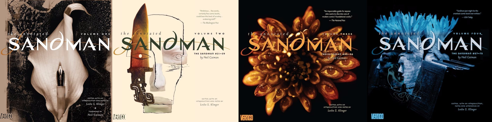
出版时间：2012-2015年
出版情况：仅卷一再版还在印刷
出版社：2012版VERTIGO，2022版DC BlackLabel
装订方式：精装/Hardcover/HC
总共本数：四本
包含形式：按期数集合
包含内容：《睡魔》正传 +《浪漫之花》短篇 +《睡魔：俄耳甫斯之歌》特期 +《畏惧坠落》短篇 +《他们是如何遇见他们自己的》短篇 +《城堡》短篇
淘宝情况：仅在售2022版卷一
淘宝价格：平均220-360元一本
优点：有注释，封面好看独特
缺点：价格昂贵，内容不全，黑白未上色
推荐指数：3/5
注释版《睡魔》卷一/Annotated Sandman Volume 1
包含：《睡魔》1-20
页数：560页
出版时间：初刷2012年1月，再刷2022年4月
封面标价：49.99美元
注意：该本在2022年得到了再版印刷，除了出版社变更没有任何区别。
注释版《睡魔》卷二/Annotated Sandman Volume 2
包含：《睡魔》21-39 +《浪漫之花》短篇
页数：520页
出版时间：2012年11月
封面标价：49.99美元
注释版《睡魔》卷三/Annotated Sandman Volume 3
包含：《睡魔》40-55 +《睡魔：俄耳甫斯之歌》特期 +《畏惧坠落》短篇 +《他们是如何遇见他们自己的》短篇
页数：519页
出版时间：2014年10月
封面标价：49.99美元
注释版《睡魔》卷四/Annotated Sandman Volume 4
包含：《睡魔》57-75 +《城堡》短篇
页数：544页
出版时间：2015年12月
封面标价：49.99美元
————分界线————
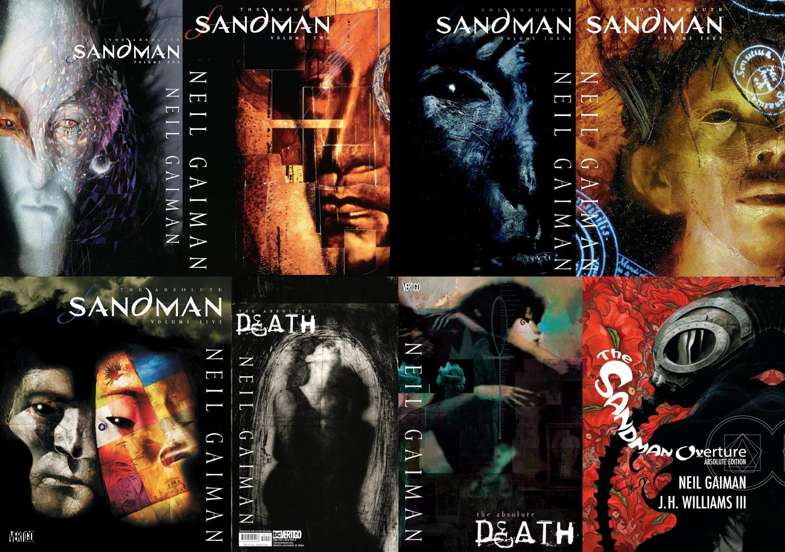
出版时间：2006-2011年，2018年
出版情况：还在印刷
出版社：VERTIGO
装订方式：精装/Hardcover/HC
总共本数：七本
包含形式：按期数集合
包含内容：全部
淘宝情况：均有售
淘宝价格：平均600-900元一本
优点：封面好看独特，最大的合订本，内容齐全
缺点：价格巨贵
推荐指数：4/5
绝对版《睡魔》卷一/Absolute Sandman Volume 1
包含：《睡魔》1-20
页数：560页
出版时间：2006年10月
封面标价：99.99美元
绝对版《睡魔》卷二/Absolute Sandman Volume 2
包含：《睡魔》21-39 +《浪漫之花》短篇
页数：616页
出版时间：2007年10月
封面标价：99.99美元
绝对版《睡魔》卷三/Absolute Sandman Volume 3
包含：《睡魔》40-56 +《睡魔：俄耳甫斯之歌》特期 +《畏惧坠落》短篇 +《他们是如何遇见他们自己的》短篇
页数：616页
出版时间：2008年6月
封面标价：99.99美元
绝对版《睡魔》卷四/Absolute Sandman Volume 4
包含：《睡魔》57-75 +《城堡》短篇
页数：608页
出版时间：2008年11月
封面标价：99.99美元
绝对版《睡魔》卷五/Absolute Sandman Volume 5
包含：《睡魔：捕梦者》小说与漫画 +《睡魔：无尽黑夜》特期 +《睡魔：午夜剧场》特期
页数：512页
出版时间：2011年11月
封面标价：99.99美元
绝对版《死亡》/Absolute Death
包含：《死亡：活着的高昂代价》1-3 +《死亡：一生若刻》1-3 + 《死亡浅谈生命》特期 +《冬日谈》短篇 +《摩天轮》短篇 +《睡魔》8/20 +《睡魔：无尽黑夜》特期中的死亡故事
页数：360页
出版时间：初刷2009年10月，再刷2020年1月
封面标价：99美元
注意：此本在2020年得到了再版印刷，无任何区别。
绝对版《睡魔：序曲》/Absolute Sandman: Overture
包含：《睡魔：序曲》1-6
页数：416页
出版时间：2018年6月
封面标价：125美元
————分界线————
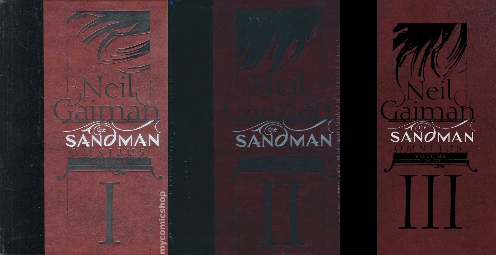
出版时间：2013年，2019年
出版情况：还在印刷
出版社：初刷VERTIGO，2020年后DC BlackLabel
装订方式：精装/Hardcover/HC
总共本数：三本 + 前两本拥有限定款白银套装
包含形式：按期数集合
包含内容：全部
淘宝情况：均有售
淘宝价格：平均600-1000元一本
优点：内容齐全
缺点：价格偏贵，书本太厚太重
推荐指数：4/5
《睡魔》综合集卷一/Sandman Omnibus Volume 1
包含：《睡魔》1-37 +《睡魔：俄耳甫斯之歌》特期
页数：1040页
出版时间：2013年8月
封面标价：150美元
《睡魔》综合集卷二/Sandman Omnibus Volume 2
包含：《睡魔》38-75 +《畏惧坠落》短篇 +《浪漫之花》短篇 +《他们是如何遇见他们自己的》短篇 +《城堡》短篇 +
页数：1040页
出版时间：2013年11月
封面标价：150美元
《睡魔》综合集卷三/Sandman Omnibus Volume 3
包含：《死亡：活着的高昂代价》1-3 +《死亡浅谈生命》特期 +《睡魔：午夜剧场》特期 +《死亡：一生若刻》1-3 +《睡魔：捕梦者》小说与漫画 +《睡魔：无尽黑夜》特期 +《睡魔：序曲》1-6 +《冬日谈》短篇 +《摩天轮》短篇
页数：970页
出版时间：2019年3月
封面标价：150美元
————分界线————
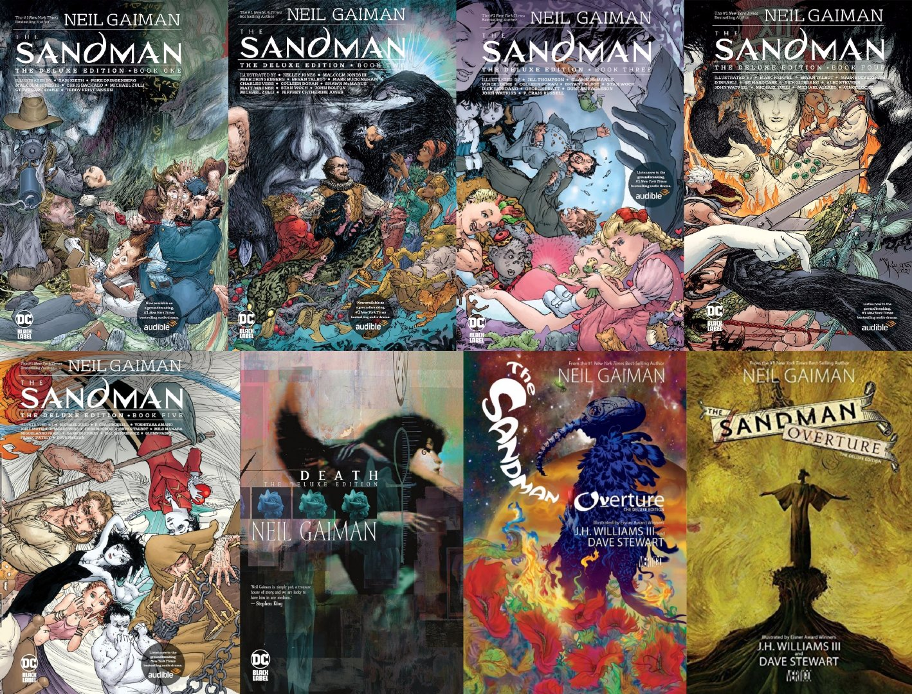
出版时间：2012年，2016年，2020-2022年
出版情况：还在印刷
出版社：VERTIGO，DC BlackLabel
装订方式：精装/Hardcover/HC
总共本数：七本 + 序曲独家封面版
包含形式：按期数集合
包含内容：全部
淘宝情况：均有售
淘宝价格：平均220-280元一本，死亡140-180一本，序曲100-150一本
优点：内容齐全，封面好看，价格亲民
缺点：无明显缺点
推荐指数：5/5
《睡魔》豪华版合集书一/Sandman Deluxe Edition Book One
包含：《睡魔》1-16 +《睡魔：午夜剧场》特期
页数：528页
出版时间：2020年11月
封面标价：49.99美元
《睡魔》豪华版合集书二/Sandman Deluxe Edition Book Two
包含：《睡魔》17-31 +《畏惧坠落》短篇 +《睡魔：俄耳甫斯之歌》特期 +《浪漫之花》短篇 +《冬日谈》短篇 +《他们是如何遇见他们自己的》短篇
页数：496页
出版时间：2021年3月
封面标价：49.99美元
《睡魔》豪华版合集书三/Sandman Deluxe Edition Book Three
包含：《睡魔》32-50
页数：560页
出版时间：2021年8月
封面标价：49.99美元
《睡魔》豪华版合集书四/Sandman Deluxe Edition Book Four
包含：《睡魔》51-69 +《城堡》短篇
页数：528页
出版时间：2021年11月
封面标价：49.99美元
《睡魔》豪华版合集书五/Sandman Deluxe Edition Book Five
包含：《睡魔》70-75 +《睡魔：捕梦者》小说与漫画 +《睡魔：无尽黑夜》特期
页数：632页
出版时间：2022年2月
封面标价：49.99美元
《死亡》豪华版合集/Death Deluxe Edition
包含：《死亡：活着的高昂代价》1-3 +《死亡：一生若刻》1-3 + 《死亡浅谈生命》特期 +《冬日谈》短篇 +《摩天轮》短篇 +《睡魔》8/20 +《睡魔：无尽黑夜》特期中的死亡故事
页数：315页
出版时间：初刷2012年10月，再刷2022年4月
封面标价：29.99美元
注意：两次印刷除封面更换出版社外无任何区别，但其与平装本共享封面，区别在于该精装本比平装本多了“The Deluxe Edition”一行字，少了“From The Internationally Best-selling Author of The Sandman”的标识。
《睡魔：序曲》豪华版合集/Sandman: Overture Deluxe Edition
包含：《睡魔》1-6
页数：224页
出版时间：2015年11月
封面标价：24.99美元
注意：该本与平装本共享封面，区别在于该精装本比平装本多了“The Deluxe Edition”一行字，少了“Winner of the Hugo Award”的标识。独家封面版本无内容上区别。
————分界线————
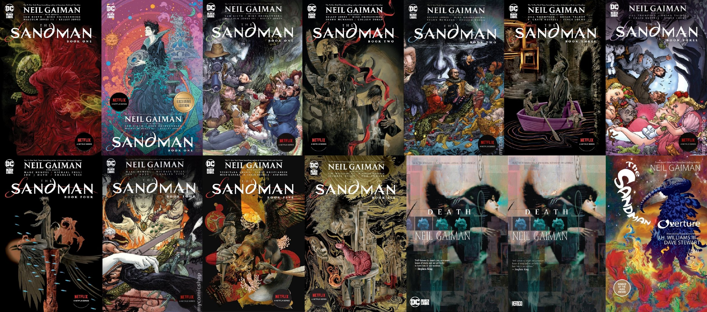
出版时间：2014年，2016年，2021-2023年
出版情况：还在印刷
出版社：VERTIGO，DC BlackLabel
装订方式：平装本/Softcover/Papaerback/TPB
总共本数：八本 + 五本特殊封面
包含形式：按期数集合
包含内容：全部，但书六与序曲重复，还多送《睡魔宇宙》特期
淘宝情况：仅正传普封六本与序曲一本在售
淘宝价格：平均150-220元一本，序曲90-120一本
优点：内容齐全，封面好看，价格便宜
缺点：平装装订
推荐指数：4/5
注意：本系列前四本拥有与豪华版系列封面相同的变体封面，区别在于没有“The Deluxe Edition”的标识，以及广播改编剧的广告被换成了影视改编剧的广告。
《睡魔》平装本书一/Sandman TPB Book One
包含：《睡魔》1-20
页数：560页
出版时间：2022年4月
封面标价：34.99美元
《睡魔》平装本书二/Sandman TPB Book Two
包含：《睡魔》21-37 +《睡魔：俄耳甫斯之歌》特期 +《浪漫之花》短篇 +《冬日谈》短篇 +《他们是如何遇见他们自己的》短篇
页数：544页
出版时间：2022年4月
封面标价：34.99美元
《睡魔》平装本书三/Sandman TPB Book Three
包含：《睡魔》38-56+《畏惧坠落》短篇
页数：528页
出版时间：2022年5月
封面标价：34.99美元
《睡魔》平装本书四/Sandman TPB Book Four
包含：《睡魔》57-75 +《城堡》短篇
页数：536页
出版时间：2022年5月
封面标价：34.99美元
《睡魔》平装本书五/Sandman TPB Book Five
包含：《睡魔：午夜剧场》特期 +《睡魔：捕梦者》小说 +《睡魔：无尽黑夜》特期
页数：321页
出版时间：2023年2月
封面标价：34.99美元
《睡魔》平装本书六/Sandman TPB Book Six
包含：《睡魔：序曲》1-6 +《睡魔：捕梦者》漫画 +《睡魔宇宙》特期
页数：360页
出版时间：2023年8月
封面标价：34.99美元
《死亡》合集/Death Edition
包含：《死亡：活着的高昂代价》1-3 +《死亡：一生若刻》1-3 + 《死亡浅谈生命》特期 +《冬日谈》短篇 +《摩天轮》短篇 +《睡魔》8/20 +《睡魔：无尽黑夜》特期中的死亡故事
页数：315页
出版时间：初刷2014年3月，再刷2022年4月
封面标价：24.99美元
注意：两次印刷除封面更换出版社外无任何区别，但其与精装本共享封面，区别在于该平装本比精装本少了“The Deluxe Edition”一行字，多了“From The Internationally Best-selling Author of The Sandman”的标识。
《睡魔：序曲》合集/Sandman: Overture Edition
包含：《睡魔》1-6
页数：224页
出版时间：初刷2016年11月，再刷2019年10月
封面标价：19.99美元
注意：两次印刷除封面出版社标志更换位置少了一个标识外无任何区别，该本与精装本共享封面，区别在于该平装本比精装本少了“The Deluxe Edition”一行字，多了“Winner of the Hugo Award”的标识。
————分界线————
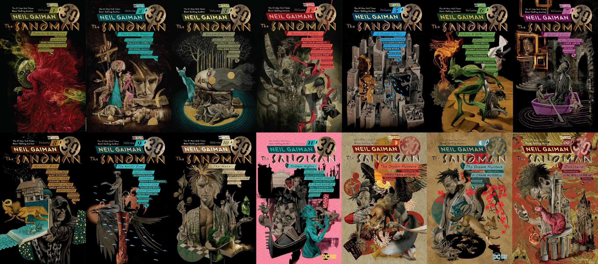
出版时间：2018-2019年
出版情况：还在印刷
出版社：初刷DCVERTIGO，再刷DC BlackLabel
装订方式：平装本/Softcover/Papaerback/TPB
总共本数：十四本
包含形式：按故事线集合
包含内容：《睡魔》正传 +《睡魔：俄耳甫斯之歌》特期 +《畏惧坠落》短篇 +《城堡》短篇 +《睡魔：无尽黑夜》特期 +《睡魔：捕梦者》小说与漫画 +《睡魔：序曲》
淘宝情况：均有在售
淘宝价格：平均90-130元一本
优点：价格便宜
缺点：平装装订，封面巨丑，内容不全，最小的合订本
推荐指数：3/5
《睡魔》卷一前奏与夜曲/The Sandman Vol. 1 Preludes & Nocturnes
包含：《睡魔》1-8
页数：240页
出版时间：2018年10月
封面标价：19.99美元
《睡魔》卷二玩偶之家/The Sandman Vol. 2 The Doll's House
包含：《睡魔》9-16
页数：232页
出版时间：2018年11月
封面标价：19.99美元
《睡魔》卷三梦境国度/The Sandman Vol. 3 Dream Country
包含：《睡魔》17-20
页数：160页
出版时间：2018年11月
封面标价：19.99美元
《睡魔》卷四迷雾季节/The Sandman Vol. 4 Season of Mists
包含：《睡魔》21-28
页数：192页
出版时间：2019年1月
封面标价：19.99美元
《睡魔》卷五一场游戏一场梦/The Sandman Vol. 5 A Game of You
包含：《睡魔》32-37
页数：192页
出版时间：2019年2月
封面标价：19.99美元
《睡魔》卷六神话与倒影/The Sandman Vol. 6 Fables and Reflections
包含：《睡魔》29-31/38-40/50 +《睡魔：俄耳甫斯之歌》特期 +《畏惧坠落》短篇
页数：264页
出版时间：2019年3月
封面标价：19.99美元
《睡魔》卷七短暂生命/The Sandman Vol. 7 Brief Lives
包含：《睡魔》41-49
页数：256页
出版时间：2019年4月
封面标价：19.99美元
《睡魔》卷八世界尽头/The Sandman Vol. 8 World's End
包含：《睡魔》51-56
页数：168页
出版时间：2019年5月
封面标价：19.99美元
《睡魔》卷九仁慈女神/The Sandman Vol. 9 The Kindly Ones
包含：《睡魔》57-69 +《城堡》短篇
页数：352页
出版时间：2019年7月
封面标价：19.99美元
《睡魔》卷十梦醒时分/The Sandman Vol. 10 The Wake
包含：《睡魔》70-75
页数：192页
出版时间：2019年7月
封面标价：19.99美元
《睡魔》卷十一无尽黑夜/The Sandman Vol. 11 Endless Nights
包含：《睡魔：无尽黑夜》特期
页数：160页
出版时间：2019年8月
封面标价：19.99美元
《睡魔》卷十二捕梦者/The Sandman Vol. 12 The Dream Hunters
包含：《睡魔：捕梦者》散文插画小说
页数：126页
出版时间：2019年9月
封面标价：19.99美元
《睡魔》卷十三捕梦者/The Sandman Vol. 13 The Dream Hunters
包含：《睡魔：捕梦者》小说改漫画
页数：125页
出版时间：2019年9月
封面标价：19.99美元
《睡魔》卷十四序曲/The Sandman Vol. 14 Overture
包含：《睡魔：序曲》1-6
页数：161页
出版时间：2019年10月
封面标价：19.99美元
————分界线————
好了，以上便是尼尔盖曼《睡魔》有史以来发行过的所有合订本。从书籍大小来排列分别是：绝对版＞注释版＞综合集＞分书集＞分卷集。各类合订本合集内容和方式均有所不同，大家可以为了好看和强迫症按套购入，也可以根据自己的情况和需要先拆散再重组家庭购买，但千万不要买重复内容了，也不要买贵了，不管你是在哪里 购买都记得货比三家且注意区别以防买错。
南瓜头这里比较推荐大家购买豪华版合集一套，这本包含了所有的内容，也是大陆市场上最常见性价比最高的一款，再且封面确实很好看。
希望大家早日集齐自己的小小无尽家族！有什么问题可以评论区留言。
（注：整理并没有包含衍生系列，以及像是Dust Cover和Sandman Companion这样的“非故事合订本”。以上一些合订本中部分还包含“死亡画廊”“梦君画廊”“无尽画廊”和“最后一条睡魔故事”这样的“非故事性附带内容”，具体大家自己去探索吧。）